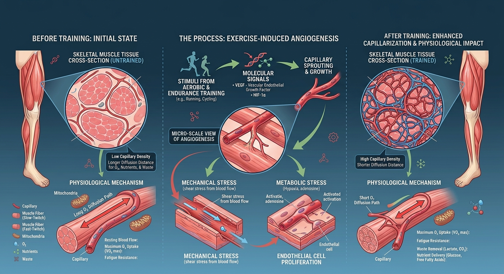

Vascular Performance Series

🩸 The Vascular Infrastructure of Climbing
When climbers talk about improving endurance, they often focus on technique, fingerboard training, or route volume. But beneath the skin, in the muscle tissue of your forearms and hands, lies another important adaptation: capillarization.
Capillarization — the extent of capillary supply within muscle tissue — contributes to the diffusion of oxygen between the blood and working muscle fibres and supports the exchange of nutrients and metabolites. It's measured in a few related but distinct ways (capillary-to-fibre ratio, capillary contacts, capillary density), which matters because density specifically can shift when fibre size changes even without any new capillaries forming — more on that below. It's one important component of climbing endurance, alongside mitochondrial capacity, force relative to maximum voluntary contraction, contraction-relaxation timing, vascular function, technique and pacing — and it's trainable.
🔬 Angiogenesis vs Capillarization — The Distinction
These terms get used loosely, so it's worth being precise. Angiogenesis is the process — new microvessels, predominantly capillaries, forming from existing vessels. Capillarization is the structural outcome — the resulting capillary supply of a tissue, measured as capillary density, capillary-to-fibre ratio, or capillary contacts. Capillarization isn't a separate process running on different triggers; it's generally the measurable result of angiogenesis and vascular remodelling. (Growth of larger vessels — arterioles, collateral arteries — is more precisely called arteriogenesis, a related but distinct process.)
| Feature | Angiogenesis (the process) | Capillarization (the outcome) |
|---|---|---|
| What it is | Formation of new capillaries from existing vessels | The resulting capillary density/supply — what you'd measure in a biopsy |
| Triggers | Hypoxia, VEGF signalling, mechanical stress (shear, stretch), metabolic demand | Same triggers — capillarization is what you see after they've acted over time |
| Key driver | Shear stress and passive stretch on vessel walls | Sustained, repeated exposure to that same driver |
| Climbing relevance | The mechanism ARC/Zone 2 climbing plausibly triggers | What a C:F ratio or capillary density measurement would show if it worked |
| Key studies | Prior et al. (2004) — NO & shear stress mechanism | Jensen et al. (2004), Mølmen et al. (2025) — direct structural growth |
The two mechanical pathways lead to structurally different outcomes: shear stress tends to drive capillary growth by longitudinal splitting of existing vessels, while passive stretch drives growth by sprouting — a slower process requiring more active endothelial cell proliferation (Hellsten & Hoier, 2014).
📊 The Capillary-to-Fibre (C:F) Ratio
The C:F ratio measures the number of capillaries per muscle fibre. In endurance-trained cyclists, it's strongly associated with Critical Power — though the underlying research (Mitchell et al., 2018) measured only 14 endurance-trained men's vastus lateralis (thigh), not climbers' forearms, and was a cross-sectional correlation rather than a prospective or causal study. The extension to climbing performance below is a plausible hypothesis, not a directly demonstrated finding.
A higher C:F ratio may support several aspects of aerobic muscle function:
🫁 Oxygen Delivery
Greater capillary supply can increase the available exchange surface and shorten the average diffusion distance for oxygen, although this also depends on fibre size and capillary arrangement — supporting faster O₂ transfer into muscle fibres (Wagner, 1996).
🧹 Metabolite Exchange
A larger capillary network can facilitate the transport of lactate, CO₂ and other metabolites between working muscle and the circulation. This may contribute to fatigue resistance, although forearm pump is also influenced by intramuscular pressure, vascular occlusion, inorganic phosphate, hydrogen-ion accumulation, potassium shifts and force relative to MVC (Saltin & Gollnick, 1983).
⚡ Aerobic ATP Production
Greater reliance on oxidative metabolism may help delay anaerobic fatigue, potentially supporting W′bal for crux sequences (Holloszy & Coyle, 1984).
⛰️ Critical Power (CP)
C:F ratio is strongly associated with CP in trained cyclists — the highest sustainable intensity before rapid W′bal depletion begins (Poole et al., 2016).
🧗 The Climbing & Endurance Evidence
Skeletal-muscle capillarity is strongly linked to Critical Power in trained cyclists, and forearm oxygenation research in climbers points to a similar picture — though direct evidence connecting forearm capillary density to climbing-specific CP is still lacking. Here's the evidence organised by what it actually shows:
| Area | Best supporting studies |
|---|---|
| Angiogenic mechanisms and signalling | Prior et al. (2004); Hellsten & Hoier (2014); Taylor et al. (2016); Fan et al. (2021) |
| Direct training-induced capillary growth | Jensen et al. (2004); Mølmen et al. (2025) |
| Association between capillarity and CP | Mitchell et al. (2018) |
| Climbing-specific vascular function | Ferguson & Brown (1997); Fryer et al. (2016); Ferrer-Uris et al. (2024) |
- →Mitchell et al. (2018) — In endurance-trained cyclists, capillary contacts around type I fibres correlated with cycling CP at r=0.94 (P<0.001). C:F ratio correlated with CP at r=0.88. W′ was not correlated with capillarity — a strong association with CP, though this study didn't examine climbing or forearm muscle.
- →Fryer et al. (2016) — In climbers, faster forearm oxygen resaturation (a NIRS-derived oxidative capacity index) was associated with better redpoint grade.
- →Giles et al. (2017) — Climbers' dominant forearm recovered oxygenation 13.6% faster than the non-dominant forearm, consistent with a training-driven local vascular adaptation.
- →Ferrer-Uris et al. (2024) — Climbers showed faster reactive-hyperaemia blood flow and greater oxygenated-haemoglobin responses than active non-climbers; the authors propose structural capillary adaptation as a possible explanation, though this wasn't directly measured.
- →Ferguson & Brown (1997) — Trained climbers showed greater peak forearm vascular conductance and vasodilatory capacity than untrained subjects during isometric exercise. This is a measure of vascular conductance, not capillary density or C:F ratio directly, but it's still meaningful evidence of a climbing-specific vascular adaptation.
- →Prior et al. (2004) reviewed the mechanical and metabolic mechanisms through which exercise training stimulates vascular growth. Andersen & Saltin (1985) demonstrated the exceptionally high perfusion and oxygen uptake capacity of exercising human skeletal muscle, but did not directly measure training-induced capillarization.
- →Jensen et al. (2004) — Direct human biopsy evidence: 4 weeks of high-intensity intermittent training raised capillary-to-fibre ratio and endothelial cell proliferation, with no further increase after 7 weeks — genuine structural capillary growth, not just a biomarker change.
- →Aghaei et al. (2020) — In 26 elite climbers, 4 weeks of climbing with blood flow restriction raised resting VEGF and growth hormone significantly, while climbing without BFR did not. This is real climbing-specific evidence, but it's a circulating biomarker measurement, not a structural capillary count — see the note on signalling vs. structural growth below.
"Greater capillarization may help delay pump and support a higher sustainable output. It represents one part of the aerobic infrastructure underlying climbing endurance."— Pranaclimb
🏋️ How to Train Capillarization
Capillary growth is influenced by several interacting stimuli, including blood-flow-induced shear stress, mechanical stretch, metabolic demand and local hypoxic signalling. Sustained aerobic work is one practical way to provide repeated vascular stimulation, although endurance, high-intensity and sprint training can all increase capillaries per muscle fibre. The 2025 meta-regression covered above (Mølmen et al.) found similar C:F increases across all three. Endurance training produced higher capillary density specifically, but the paper's own authors note this was driven partly by endurance training causing less fibre hypertrophy than HIT or sprint work — not necessarily because it formed more capillaries per se. This is a genuinely useful distinction: don't assume capillary count and capillary density always move together.
ARC Training — A Climbing-Specific Aerobic Conditioning Method
ARC (Aerobic Restoration and Capillarization) training is a widely-used coaching convention for building forearm aerobic capacity in climbing. The goal is continuous climbing at low intensity for 20–45 minutes — keeping forearms "pumped but not failed." No longitudinal biopsy study has yet established this specific protocol as the optimal capillarization stimulus — but it's a plausible, climbing-specific way to accumulate sustained aerobic work.
ARC Protocol — Basic
The numbers below are a Pranaclimb field framework, adapted to the individual climber's current capacity — not validated universal physiological thresholds. BR figures refer to Raw BR; use nasal breathing only when it's comfortable and adequate for the ventilatory demand of the effort.
20–45 min continuous climbing at ~RPE 4–6 (below CP)
BR should stay below 35 BPM — nasal breathing if possible
Forearms should feel warm and lightly pumped — never failing
Rest 10–15 min between sets · 2–3 sets per session
Pranaclimb cue: If BR rises above 40 BPM → downclimb or rest.
Zone 2 Climbing & Endurance Intervals
- →Zone 2 climbing (a coaching translation of the general-exercise "Zone 2" concept, not a validated climbing-specific physiological zone) — sustained easy climbing at RPE 4–6, nasal breathing when comfortable and sufficient for your ventilatory demand. Longer cumulative time under sustained blood flow is the working hypothesis behind this approach.
- →Endurance intervals — 4–10 min on, 1–2 min off. A structured way to accumulate time under moderate load.
- →Manage total training load — excessive endurance volume may add fatigue and reduce the quality of strength and power sessions. Balance volume, intensity and recovery.
An earlier 2022 meta-analysis (Liu et al., 57 trials, 38 studies) adds a further wrinkle: in sedentary subjects, it found continuous moderate-intensity training produced a 21% higher relative increase in C:F than low-intensity training, but high-intensity interval training produced a 54% higher increase — larger than moderate training, not smaller. As with Mølmen, growth wasn't related to intervention duration, and already-trained subjects showed no additional increase regardless of training type. Taken together, the two meta-analyses agree that low-intensity work underperforms and that trained athletes see diminishing returns — but they don't agree on whether moderate or high-intensity training has the edge for previously untrained people, which is a genuinely open question rather than a settled one.
There's a plausible mechanism for why endurance training has this edge specifically for density. Gliemann (2016) frames it as a "Janus-faced" role for intensity: short, all-out efforts are excellent for cardiac remodelling and mitochondrial biogenesis, but capillary growth also depends on shear stress sustained over time — a reasonable interpretation, though it hasn't been directly tested against the alternative. Consistent with the broader picture, elite endurance athletes generally display substantially greater skeletal-muscle capillary supply than untrained people (Ingjer, 1979), although the magnitude varies with muscle, fibre type and measurement method.
The honest summary: all three training styles stimulate some capillary adaptation, sprint-style efforts specifically underperform for capillary density, and endurance-style volume — which is what ARC and Zone 2 climbing are built around — has the best evidence for density gains specifically. That's a real, if narrower, edge for the moderate-and-repeated approach, not a case that high intensity is ineffective.
🫁 Breathwork's Role — A Hypothesis, Not Yet Evidence
No direct studies link breathwork to capillarization in climbers. What follows is a plausible Pranaclimb hypothesis built on general nitric oxide (NO) physiology — not an established vascular-performance mechanism. An increase in nasal gas-phase NO is not the same as a demonstrated increase in systemic endothelial NO bioavailability, limb blood flow, or skeletal-muscle capillary growth.
👃 Nasal Breathing During ARC
Nasal breathing is a source of nitric oxide, which is a vasodilator. Whether nasal breathing during ARC meaningfully amplifies forearm shear stress or the capillarization stimulus specifically has not been tested.
🐝 Bhramari Between Sets
Humming produces roughly a 15-fold increase in nasal NO compared with quiet exhalation, measured via gas exchange between the sinuses and nasal cavity (Weitzberg & Lundberg, 2002). This effect declines with repeated humming until the sinuses replenish (Maniscalco et al., 2003). Whether this translates into meaningfully greater limb blood flow or recovery between ARC sets is untested.
💨 Bhastrika Pre-Session
Bhastrika acutely increases ventilation and may increase subjective arousal. Whether a brief pre-climb practice improves pulmonary function, vascular preparation or climbing performance has not been established.
🌿 Nadi Shodhana Post-Session
Slow or alternate-nostril breathing may be used after training to support deliberate downregulation. Direct effects on HRR₆₀, skeletal-muscle angiogenesis, or long-term vascular adaptation have not been established.
⚡ Capillarization & the Pranaclimb Framework
Capillarization is one possible peripheral physiological contributor to the performance patterns monitored within the Pranaclimb field framework — which is built primarily on Raw and Effective BR, CR-10 RPE, HRR₆₀, CP/RCP, and modelled W′bal. Here's how a higher C:F ratio might plausibly connect to what we track in the field — these are indirect observations, not direct measurements of capillary growth. Changes in Raw BR, RPE, HRR₆₀, or modelled W′bal can't be attributed to capillarization alone; force relative to MVC, contraction-relaxation timing, intramuscular pressure, mitochondrial capacity, fibre type, technique and pacing all play a role too.
| Possible Adaptation | Possible Field Manifestation |
|---|---|
| Greater local oxygen diffusion | Faster forearm reoxygenation between contractions or repetitions |
| Greater aerobic capacity | Lower RPE or Raw BR during a standardized submaximal circuit |
| Higher task-specific CP | More climbing completed before severe-domain fatigue develops |
| Improved fatigue resistance | Longer maintenance of grip-and-release quality before pump escalates |
References
- Aghaei, M., Vakili, J., & Amirsasan, R. (2020). The comparing effects of four-week rock climbing with or without blood flow restriction on vascular endothelial growth factor and growth hormone in elite climbers. Medical Journal of Tabriz University of Medical Sciences and Health Services, 42(3), 237–244. doi.org/10.34172/mj.2020.041
- Andersen, P., & Saltin, B. (1985). Maximal perfusion of skeletal muscle in man. The Journal of Physiology, 366(1), 233–249. doi.org/10.1113/jphysiol.1985.sp015794
- Ding, Y., Wan, Q., Kim, J. C., Liu, W., & Ji, W. (2025). The role of exercise induced capillarization adaptations in skeletal muscle aging: a systematic review. Frontiers in Physiology, 16, 1681184. doi.org/10.3389/fphys.2025.1681184
- Fan, Z., Turiel, G., Ardicoglu, R., Ghobrial, M., Masschelein, E., Kocijan, T., Zhang, J., Tan, G., Fitzgerald, G., Gorski, T., Alvarado-Diaz, A., Gilardoni, P., Adams, C. M., Ghesquière, B., & De Bock, K. (2021). Exercise-induced angiogenesis is dependent on metabolically primed ATF3/4⁺ endothelial cells. Cell Metabolism, 33(9), 1793–1807.e9. doi.org/10.1016/j.cmet.2021.07.015
- Ferguson, R. A., & Brown, M. D. (1997). Arterial blood pressure and forearm vascular conductance responses to sustained and rhythmic isometric exercise and arterial occlusion in trained rock climbers and untrained sedentary subjects. European Journal of Applied Physiology and Occupational Physiology, 76(2), 174–180. doi.org/10.1007/s004210050231
- Ferrer-Uris, B., Busquets, A., Beslija, F., & Durduran, T. (2024). Assessment of microvascular hemodynamic adaptations in finger flexors of climbers. Bioengineering, 11(4), 401. doi.org/10.3390/bioengineering11040401
- Fryer, S., Stoner, L., Stone, K., Giles, D., Sveen, J., Garrido, I., & España-Romero, V. (2016). Forearm muscle oxidative capacity index predicts sport rock-climbing performance. European Journal of Applied Physiology, 116(8), 1479–1484. doi.org/10.1007/s00421-016-3403-1
- Giles, D., Romero, V. E., Garrido, I., de la O Puerta, A., Stone, K., & Fryer, S. (2017). Differences in oxygenation kinetics between the dominant and nondominant flexor digitorum profundus in rock climbers. International Journal of Sports Physiology and Performance, 12(1), 137–139. doi.org/10.1123/ijspp.2015-0651
- Gliemann, L. (2016). Training for skeletal muscle capillarization: a Janus-faced role of exercise intensity? European Journal of Applied Physiology, 116(8), 1443–1444. doi.org/10.1007/s00421-016-3419-6
- Hellsten, Y., & Hoier, B. (2014). Capillary growth in human skeletal muscle: physiological factors and the balance between pro-angiogenic and angiostatic factors. Biochemical Society Transactions, 42(6), 1616–1622. doi.org/10.1042/BST20140197
- Hellsten, Y., & Gliemann, L. (2024). Peripheral limitations for performance: muscle capillarization. Scandinavian Journal of Medicine & Science in Sports, 34(1), e14442. doi.org/10.1111/sms.14442
- Holloszy, J. O., & Coyle, E. F. (1984). Adaptations of skeletal muscle to endurance exercise and their metabolic consequences. Journal of Applied Physiology: Respiratory, Environmental and Exercise Physiology, 56(4), 831–838. doi.org/10.1152/jappl.1984.56.4.831
- Ingjer, F. (1979). Capillary supply and mitochondrial content of different skeletal muscle fiber types in untrained and endurance-trained men. European Journal of Applied Physiology and Occupational Physiology, 40(3), 197–209. doi.org/10.1007/BF00426942
- Jensen, L., Bangsbo, J., & Hellsten, Y. (2004). Effect of high intensity training on capillarization and presence of angiogenic factors in human skeletal muscle. The Journal of Physiology, 557(2), 571–582. doi.org/10.1113/jphysiol.2003.057711
- Liu, Y., Christensen, P. M., Hellsten, Y., & Gliemann, L. (2022). Effects of exercise training intensity and duration on skeletal muscle capillarization in healthy subjects: A meta-analysis. Medicine & Science in Sports & Exercise, 54(10), 1714–1728. doi.org/10.1249/MSS.0000000000002955
- Maniscalco, M., Weitzberg, E., Sundberg, J., Sofia, M., & Lundberg, J. O. (2003). Assessment of nasal and sinus nitric oxide output using single-breath humming exhalations. European Respiratory Journal, 22(2), 323–329. doi.org/10.1183/09031936.03.00017903
- Mitchell, E. A., Martin, N. R. W., Bailey, S. J., & Ferguson, R. A. (2018). Critical power is positively related to skeletal muscle capillarity and type I muscle fibers in endurance-trained individuals. Journal of Applied Physiology, 125(3), 737–745. doi.org/10.1152/japplphysiol.01126.2017
- Mitchell, E. A., Martin, N. R. W., Turner, M. C., Taylor, C. W., & Ferguson, R. A. (2019). The combined effect of sprint interval training and postexercise blood flow restriction on critical power, capillary growth, and mitochondrial proteins in trained cyclists. Journal of Applied Physiology, 126(1), 51–59. doi.org/10.1152/japplphysiol.01082.2017
- Mølmen, K. S., Almquist, N. W., & Skattebo, Ø. (2025). Effects of exercise training on mitochondrial and capillary growth in human skeletal muscle: A systematic review and meta-regression. Sports Medicine, 55(1), 115–144. doi.org/10.1007/s40279-024-02120-2
- Poole, D. C., Burnley, M., Vanhatalo, A., Rossiter, H. B., & Jones, A. M. (2016). Critical power: An important fatigue threshold in exercise physiology. Medicine and Science in Sports and Exercise, 48(11), 2320–2334. doi.org/10.1249/MSS.0000000000000939
- Saltin, B., & Gollnick, P. D. (1983). Skeletal muscle adaptability: Significance for metabolism and performance. In L. D. Peachey, R. H. Adrian, & S. R. Geiger (Eds.), Handbook of Physiology, Section 10: Skeletal Muscle (pp. 555–631). Williams & Wilkins. (Book chapter — no DOI available)
- Prior, B. M., Yang, H. T., & Terjung, R. L. (2004). What makes vessels grow with exercise training? Journal of Applied Physiology, 97(3), 1119–1128. doi.org/10.1152/japplphysiol.00035.2004
- Taylor, C. W., Ingham, S. A., Hunt, J. E. A., Martin, N. R. W., Pringle, J. S. M., & Ferguson, R. A. (2016). Exercise duration-matched interval and continuous sprint cycling induce similar increases in AMPK phosphorylation, PGC-1α and VEGF mRNA expression in trained individuals. European Journal of Applied Physiology, 116(8), 1445–1454. doi.org/10.1007/s00421-016-3402-2
- Vanhatalo, A., Jones, A. M., & Burnley, M. (2011). Application of critical power in sport. International Journal of Sports Physiology and Performance, 6(1), 128–136. doi.org/10.1123/ijspp.6.1.128
- Wagner, P. D. (1996). Determinants of maximal oxygen transport and utilization. Annual Review of Physiology, 58(1), 21–50. doi.org/10.1146/annurev.ph.58.030196.000321
- Weitzberg, E., & Lundberg, J. O. N. (2002). Humming greatly increases nasal nitric oxide. American Journal of Respiratory and Critical Care Medicine, 166(2), 144–145. doi.org/10.1164/rccm.200202-138BC